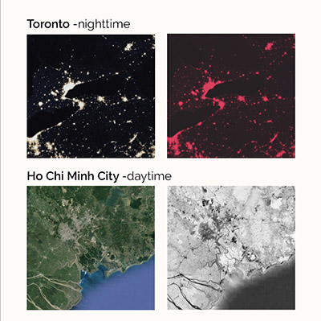
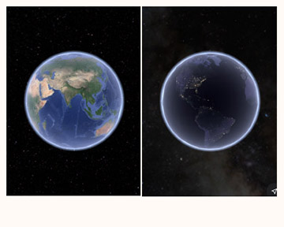
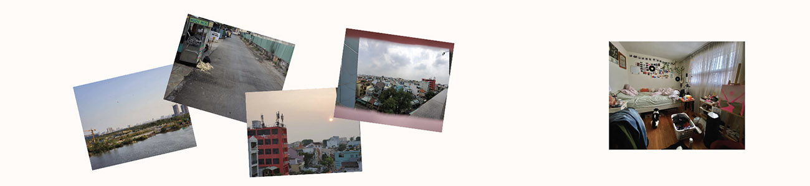
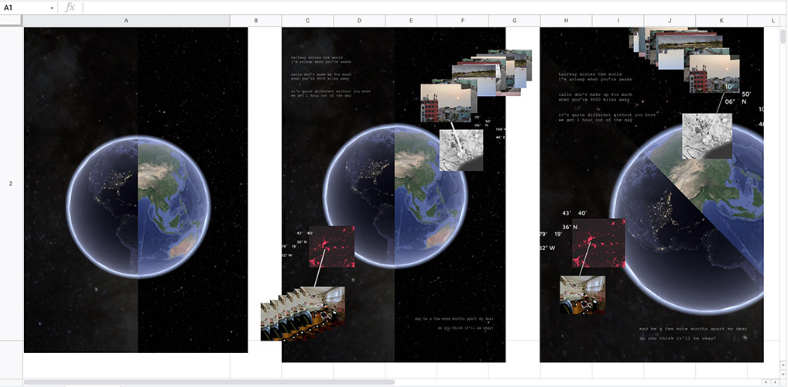

The idea for my poster came from my experience at the beginning of the pandemic. It focusses around the concepts of distance, isolation, anxiety, and uncertainty. Before covid broke out, my partner was travelling to Vietnam. He got stuck there for a while and communication was difficult with poor connection and time difference.
Google Earth was the main source for my images. Also included in the poster is a poem from my notes and images of our surroundings during the time.
Given the project objective to explore non-traditional ways of making beyond the parameters of existing design software, I used Google Sheets to compose my composition. I found this app quite difficult in terms of flexibility, organizing the components and the quality of text/images, but in the end, I found it added to the meaning.
Process
To start off this project, I began with exploring Google Earth, getting used to the app, and finding glitches in the photos (like the one at the top of the page). Then, I located our coordinates during the pandemic and took a screenshot of the area: one in the daytime and one at night.
Then I used an effects editing website, PhotoMosh to alter my images in a way that I found looks similar to looking at bacteria under a microscope (alluding to covid-19)
Next, I gathered photos he took of his surrounding areas in Vietnam, where Covid wasn't as prominent and he was able to be outside. In addition, a photo of my bedroom where I spend during quarantine. On the poster, I arranged them in a way that made them look glitchy to demonstrate the poor connection and lack of communication caused by the distance.
Finally, I compiled all of my elements; Google Earth, city screenshots, personal surrounding photos, location coordinates, and my poem; onto Google Slides to arrange my poster. I tried different compositions: first, I was focussed on the dynamicism of the poster, but after class critiques, the symmetrical split composition was better in portraying the message.
